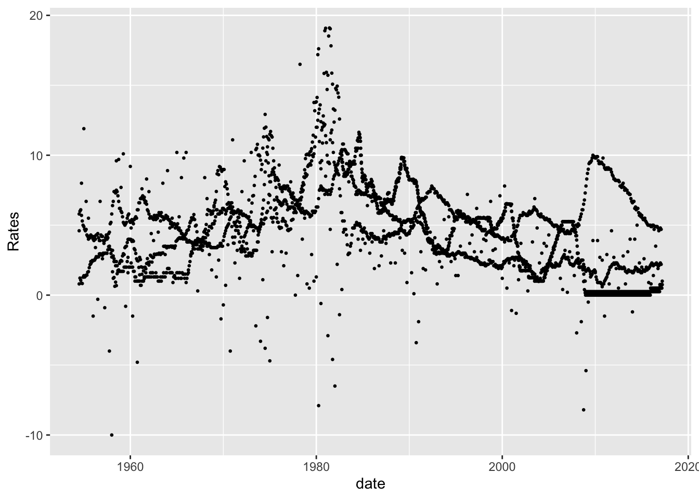
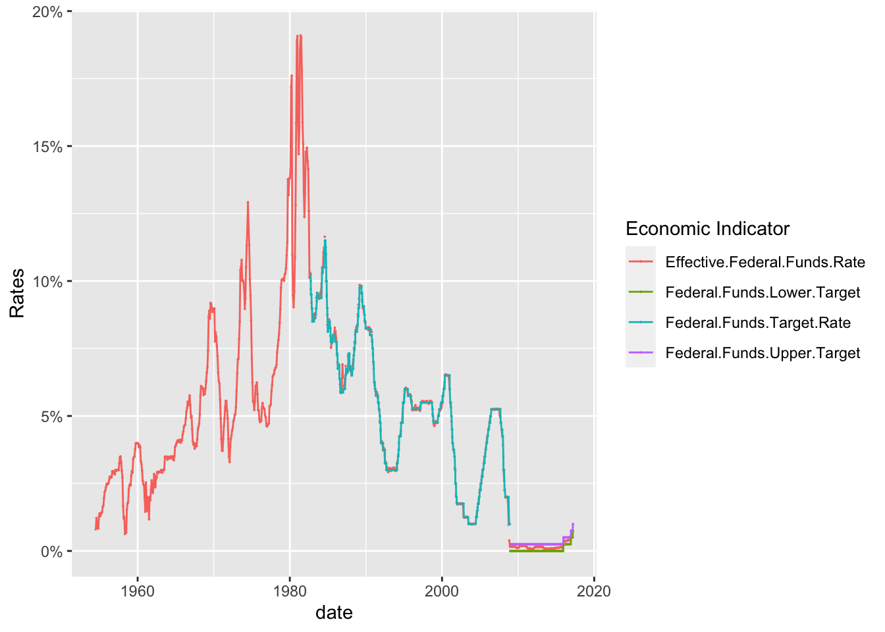
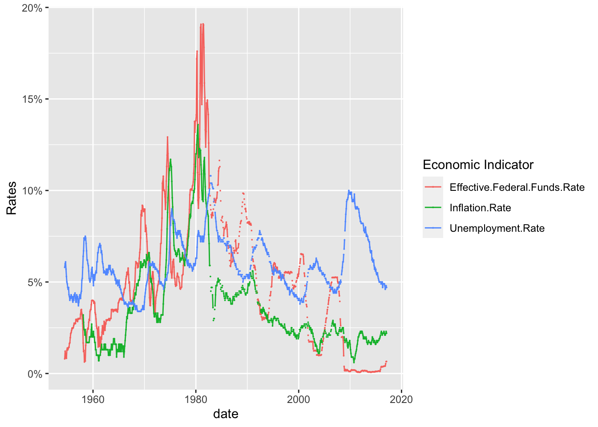
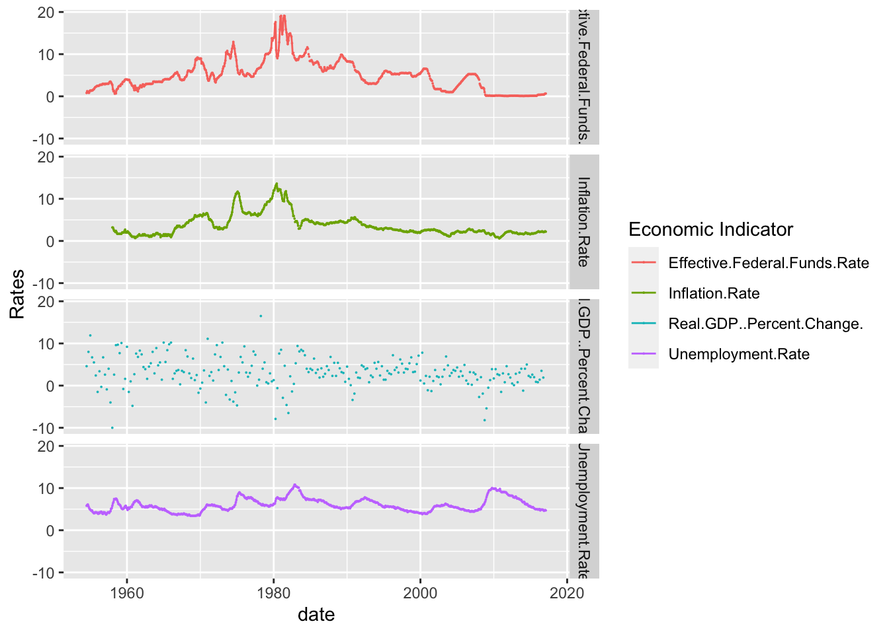
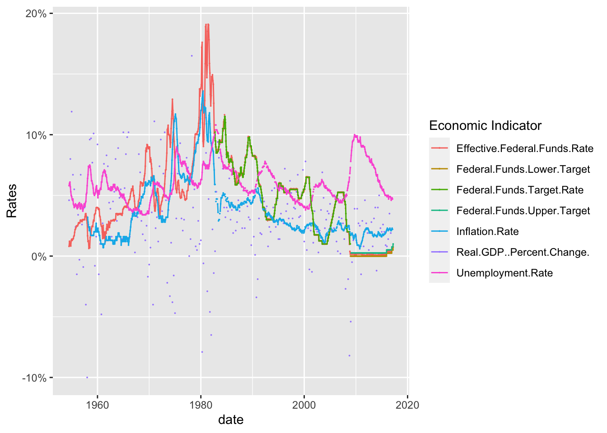

library(tidyverse)
library(ggplot2)
library(lubridate)
knitr::opts_chunk$set(echo = TRUE, warning=FALSE, message=FALSE)Challenge 6 Fed Rates
challenge_6
fed_rate
Visualizing Time and Relationships
Read in data
I started off with reading in the FedFundsRate data. Since it was a csv, it was relatively easy to read in with no issues. After examining the data set, I was able to determine that a case was a specific date accompanied by several economic indicators for that time period.
The indicators we’re GDP, inflation rate, unemployment rate, Fed target rate, Fed Lower Rate and Fed Higher Rate. Each has a numerical value that determines that specific rate for the indicator on a given date. Each case is a date and its tracked economic inidcators at that period of time.
FedRate <- read.csv("_data/FedFundsRate.csv")Briefly describe the data
As you can see from the head, the data set needs some Tidying before we can create any visualizations from it. There are a total of 904 cases (Rows) and 10 columns before Tidying.
head(FedRate, 10) Year Month Day Federal.Funds.Target.Rate Federal.Funds.Upper.Target
1 1954 7 1 NA NA
2 1954 8 1 NA NA
3 1954 9 1 NA NA
4 1954 10 1 NA NA
5 1954 11 1 NA NA
6 1954 12 1 NA NA
7 1955 1 1 NA NA
8 1955 2 1 NA NA
9 1955 3 1 NA NA
10 1955 4 1 NA NA
Federal.Funds.Lower.Target Effective.Federal.Funds.Rate
1 NA 0.80
2 NA 1.22
3 NA 1.06
4 NA 0.85
5 NA 0.83
6 NA 1.28
7 NA 1.39
8 NA 1.29
9 NA 1.35
10 NA 1.43
Real.GDP..Percent.Change. Unemployment.Rate Inflation.Rate
1 4.6 5.8 NA
2 NA 6.0 NA
3 NA 6.1 NA
4 8.0 5.7 NA
5 NA 5.3 NA
6 NA 5.0 NA
7 11.9 4.9 NA
8 NA 4.7 NA
9 NA 4.6 NA
10 6.7 4.7 NAncol(FedRate)[1] 10nrow(FedRate)[1] 904Tidy Data (as needed)
First, I wanted to combine the dates into one column instead of three. So I used the lubridate function to combine the dates and then remove the previous date columns. At first this made the data look strange since the date was the last column added, but it made visualization much easier.
### Combine columes to make date one column
FedRateDates<-FedRate%>%
mutate( date = str_c(Month, Day, Year , sep = "-"),
date = mdy(date)) %>%
select(-c(Year, Month, Day)) ### Remove Previous columns for Month, Year and Day
head(FedRateDates,10) Federal.Funds.Target.Rate Federal.Funds.Upper.Target
1 NA NA
2 NA NA
3 NA NA
4 NA NA
5 NA NA
6 NA NA
7 NA NA
8 NA NA
9 NA NA
10 NA NA
Federal.Funds.Lower.Target Effective.Federal.Funds.Rate
1 NA 0.80
2 NA 1.22
3 NA 1.06
4 NA 0.85
5 NA 0.83
6 NA 1.28
7 NA 1.39
8 NA 1.29
9 NA 1.35
10 NA 1.43
Real.GDP..Percent.Change. Unemployment.Rate Inflation.Rate date
1 4.6 5.8 NA 1954-07-01
2 NA 6.0 NA 1954-08-01
3 NA 6.1 NA 1954-09-01
4 8.0 5.7 NA 1954-10-01
5 NA 5.3 NA 1954-11-01
6 NA 5.0 NA 1954-12-01
7 11.9 4.9 NA 1955-01-01
8 NA 4.7 NA 1955-02-01
9 NA 4.6 NA 1955-03-01
10 6.7 4.7 NA 1955-04-01I then decided to pivot the data longer so that the economic indicators we’re under one tab. This increased the number of rows, but made the visualization much easier.
FedRateLonger<-FedRateDates%>%
pivot_longer( cols= "Federal.Funds.Target.Rate":"Inflation.Rate",
names_to = 'Economic Indicator',
values_to = "Rates")
head(FedRateLonger, 10)# A tibble: 10 × 3
date `Economic Indicator` Rates
<date> <chr> <dbl>
1 1954-07-01 Federal.Funds.Target.Rate NA
2 1954-07-01 Federal.Funds.Upper.Target NA
3 1954-07-01 Federal.Funds.Lower.Target NA
4 1954-07-01 Effective.Federal.Funds.Rate 0.8
5 1954-07-01 Real.GDP..Percent.Change. 4.6
6 1954-07-01 Unemployment.Rate 5.8
7 1954-07-01 Inflation.Rate NA
8 1954-08-01 Federal.Funds.Target.Rate NA
9 1954-08-01 Federal.Funds.Upper.Target NA
10 1954-08-01 Federal.Funds.Lower.Target NA I then included the summary statistics for each of the variables below.
print(summarytools::dfSummary(FedRate,
varnumbers = FALSE,
plain.ascii = FALSE,
style = "grid",
graph.magnif = 0.70,
valid.col = FALSE),
method = 'render',
table.classes = 'table-condensed')Data Frame Summary
FedRate
Dimensions: 904 x 10Duplicates: 0
| Variable | Stats / Values | Freqs (% of Valid) | Graph | Missing | ||||
|---|---|---|---|---|---|---|---|---|
| Year [integer] |
|
64 distinct values |  |
0 (0.0%) | ||||
| Month [integer] |
|
12 distinct values |  |
0 (0.0%) | ||||
| Day [integer] |
|
29 distinct values |  |
0 (0.0%) | ||||
| Federal.Funds.Target.Rate [numeric] |
|
63 distinct values |  |
442 (48.9%) | ||||
| Federal.Funds.Upper.Target [numeric] |
|
4 distinct values |  |
801 (88.6%) | ||||
| Federal.Funds.Lower.Target [numeric] |
|
4 distinct values | |
801 (88.6%) | ||||
| Effective.Federal.Funds.Rate [numeric] |
|
466 distinct values |  |
152 (16.8%) | ||||
| Real.GDP..Percent.Change. [numeric] |
|
113 distinct values |  |
654 (72.3%) | ||||
| Unemployment.Rate [numeric] |
|
71 distinct values |  |
152 (16.8%) | ||||
| Inflation.Rate [numeric] |
|
106 distinct values |  |
194 (21.5%) |
Generated by summarytools 1.0.1 (R version 4.2.2)
2023-04-17
Time Dependent Visualization
I included a basic graph, however, it was crowded and ugly. It was difficult to make any meaningful conclusions with this first basic graph.
ggplot(FedRateLonger, aes(x=date, y=Rates)) +
geom_point(size=.5) 
I then specicified the graphs so that it could included only a few of the economic indicators. As you can see, the interest rates shot up to almost 20% in the 1980s and then steadily dropped back down. However, you can see from the below graphs, that as inflation raises the rates typically rise as well.
FedRateLonger%>%
filter(`Economic Indicator` %in% c("Federal.Funds.Target.Rate", "Federal.Funds.Upper.Target", "Federal.Funds.Lower.Target", "Effective.Federal.Funds.Rate"))%>%
ggplot(., aes(x=date, y=Rates, color=`Economic Indicator`))+
geom_point(size=0)+
geom_line()+
scale_y_continuous(labels = scales::label_percent(scale = 1))
As you can see, there is a relationship between the Federal Effective Rate and inflation. Rates spikes with inflation and then as inflation decreases so do the interest rates. It is interesting to note that while there is a clear relationship between the Interest Rates and Inflation, the unemployment rate does not always share a similar relationship.
Until the 2000s, there is a clear relationship between the three until the 2020s where interest rates and inflation are low, but unemployment is high. This could be due to the COVID-19 outbreak. It would be interesting to see what other phenomena disrupted the relationship between Interest Rates, Inflation and Unemployment in recent years.
FedRateLonger%>%
filter(`Economic Indicator` %in% c("Inflation.Rate", "Effective.Federal.Funds.Rate","Unemployment.Rate" ))%>%
ggplot(., aes(x=date, y=Rates, color=`Economic Indicator`))+
geom_point(size=0)+
geom_line()+
scale_y_continuous(labels = scales::label_percent(scale = 1))
I have included below, several of the graphs individually so that they can be easy analyzed and compared.
FedRateLonger%>%
filter(`Economic Indicator` %in% c("Real.GDP..Percent.Change.", "Unemployment.Rate", "Inflation.Rate", "Effective.Federal.Funds.Rate"))%>%
ggplot(., aes(x=date, y=Rates, color=`Economic Indicator`))+
geom_point(size=0)+
geom_line()+
facet_grid(rows = vars(`Economic Indicator`))
Visualizing Part-Whole Relationships
Finally, I included a scatterplot that included all of the economic indicators. While crowded, the color makes it significantly more readable. As you can see, there is some relationships between the indicators and they all seem to depend on the other. However, a full regression analysis would be required before you can actually test the statistical significance.
ggplot(FedRateLonger, aes(x=date, y=Rates, color=`Economic Indicator`))+
geom_point(size=0)+
geom_line()+
scale_y_continuous(labels = scales::label_percent(scale = 1))